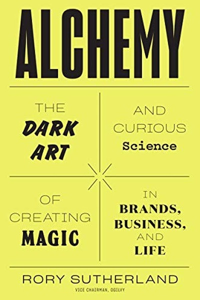

Alchemy The Surprising Power of Ideas That Dont Make Sense
Why irrational solutions often work better than obvious rational ones.
READ FULL BREAKDOWN (FREE) →The Big Idea
Human behavior is psychological, not logical. Solving problems with pure spreadsheet logic guarantees mediocre answers.
Key Lessons
Psycho-Logic Beats Logical Logic
What people feel about an experience matters more than its objective mathematical metrics.
The Red Bull Paradox
Products that test terribly in rational consumer focus groups often become global blockbusters.
Signaling and Costly Displays
Commitment is only believable when it carries obvious visible effort and sacrifice.
Solving for Meaning
Change how people frame an event and you change their entire biological response to it.
Satisficing Over Maximizing
Humans do not look for the single best option; we look for the option least likely to be a disaster.
Small Things that Trigger Big Shifts
Micro-friction in forms kills conversion more than premium prices do.
The Value of Placebos
Placebos work even when people know they are placebos because belief has physiological power.
Dare to Be Trivial
Serious organizations overlook trivial fixes that deliver massive returns.
The Graveyard Proves It
Where this advice breaks: Where this advice breaks: physics, structural integrity, and financial accounting require rigorous mathematical logic.
Read the autopsy: vice-media →